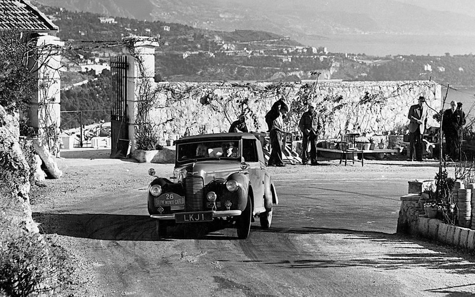

Девять лучших автогонок мира
Автогонщик – спортсмен, профессинальный участник автомобильных гонок. Профессия подходит тем, кого интересует физкультура и ОБЖ. В 2020 году центр профориентации ПрофГид разработал точный тест на профориентацию. Он сам расскажет вам, какие профессии вам подходят, даст заключение о вашем типе личности и интеллекте.
Всё когда-то начиналось с нуля. Но одни гоночные проекты умерли, а другие набрали силу и вес — о самых-самых и пойдет речь.
Среди тысяч автогонок, проводимых во всем мире, с трудом наберется десяток, которые без оговорок можно назвать великими и легендарными. Почему так мало? Ответ один: конкуренция! Тех, кто снискал признание и любовь еще на заре автомобилизма, невозможно спихнуть с пьедестала. А изобрести и продвинуть что-то принципиально новое не выходит. Хотя такие попытки делаются.
Относительно молодые дисциплины автоспорта — скажем, дрифтинг или ралли-кросс — локально популярны, но на общемировой уровень так и не вышли. И, за редким исключением, сердцами (и кошельками) болельщиков владеет классика — кольцевые гонки и ралли.
1. «24 часа Ле-Мана»
Кто-то скажет — «Ле-Ман» нынче не тот. Разумеется, всё поменялось, начиная с самих автомобилей и развиваемых ими скоростей. В 1923 году победители первого «Ле-Мана» Андре Лагаш и Рене Леонар на болиде Chenard-Walcker (Шенáр-Валькé) прошли за сутки 2209,5 км. Результат действующих победителей, экипажа заводской команды Porsche, - 5233,5 км.
Отчасти и трагедии «Ле-Мана» указали на необходимость мер безопасности. Начинали-то без каркасов, вваренных в кузова машин, без шлемов, без несгораемых комбинезонов, трассы толком не ограждались, а зрители сидели чуть ли не на дороге.
Ушла эпоха романтики, связанной с перепачканными маслом гонщиками и риском для жизни всех присутствующих. Сильно изменились правила. Но остались основные принципы и энергетика «Ле-Мана». Это по-прежнему 24‑часовая гонка с пит-стопами и сменой пилотов, где на финише замеряют не время, а пройденную дистанцию. Изначальная идея — выявить самый надежный и экономичный автомобиль — всё та же. Она привела к появлению особой породы гоночных гибридов и целого чемпионата мира по гонкам на выносливость (endurance race).
2. Гран-при Монако
 Это далеко не самый первый «Большой приз» в истории автогонок, но определенно самый знаменитый.
Многие гонки, которые родились как Гран-при в начале XX века, давно вымерли — вместе с трассами, на которых их когда-то проводили. А эта — жива, причем трасса почти та же самая, видоизменился лишь набор поворотов после туннеля. Организатор исконный — Автомобильный клуб Монако. И призы на финише вручает, как и в 1929 году, представитель княжеской династии.
Это далеко не самый первый «Большой приз» в истории автогонок, но определенно самый знаменитый.
Многие гонки, которые родились как Гран-при в начале XX века, давно вымерли — вместе с трассами, на которых их когда-то проводили. А эта — жива, причем трасса почти та же самая, видоизменился лишь набор поворотов после туннеля. Организатор исконный — Автомобильный клуб Монако. И призы на финише вручает, как и в 1929 году, представитель княжеской династии.
Название «Гран-при» давно присвоила Формула‑1, и теперь любой этап этого чемпионата мира автоматически получает статус Гран-при — например, Индии или Азербайджана.
Спроси пилотов, какой этап им больше всего нравится, назовут бельгийский или японский. Но самым престижным считается Гран-при Монако, несмотря на множество недостатков: гонки здесь нередко скучные, вместимость трибун рекордно малая, а цены на билеты — рекордно высокие.
3. Ралли Монте-Карло
Еще одно детище того же Автоклуба, причем более древнее, чем Гран-при. Первое Ралли Монте-Карло прошло в 1911 году по правилам, которые ныне никто не понял бы. Экипажи стартовали из одиннадцати разных точек Европы и где-то там, поодиночке, преодолевали дистанцию 1020 км, чтобы собраться в кучку на главной площади. Но это действительно было первое ралли в мире!
Именно так родился второй и теперь уже главный смысл слова rally — первоначально под ним подразумевалось «сборище, слёт». Сегодня ралли для многих — синоним слова «гонки».
Не важно, что до середины 1950‑х Ралли Монте-Карло было довольно заурядным мероприятием без звезд первой величины. А на старт выходили автомобили марок Turcat-Mery (Тюркá-Мери), Amilcar (Амилькар) и Invicta (Инвикта). Зато потом Ралли Монте-Карло собрало все сливки славы.
К основной гонке, чья традиционная изюминка — зимние горные дороги, двадцать лет назад добавился «прицеп» в виде гонки олдтаймеров. Она собирает по триста машин — намного больше, чем «боевой» зачет.
4. Инди-500
Одно из главных изобретений США — кольцевые гонки по овальной трассе. Впрочем, за пределы родины они толком и не вышли, наряду с бейсболом и тамошним «футболом». Понемногу есть везде, но бешеным спросом не пользуются, в отличие от «500 миль Индианаполиса». Иначе здесь не наращивали бы постоянно трибуны снаружи 2,5‑мильного овала. Их вместимость дошла уже до 270 тысяч человек (плюс зона infield — внутри трассы, где помещается еще сотня тысяч). И, надо признать, у Indy 500 самая большая гоночная аудитория в мире.
Гонка, впервые проведенная в 1911 году, дала имя классу гоночных формул и чемпионату этих формул. С 1950 по 1960 год входила в чемпионат мира Формулы‑1. Большие европейские марки стремились выиграть здесь с первых дней (Peugeot, Mercedes-Benz). Победителям на финише вместо шампанского вручают бутыли с молоком. А их имена навеки вписаны в историю мирового автоспорта.
5. «Дакар»
В 1977 году французский мотогонщик Тьерри Сабин заблудился в пустыне в ходе ралли по маршруту Абиджан — Ницца. Чудом остался жив — лишь через трое суток его нашли аборигены. Считается, что именно это приключение вдохновило Сабина на организацию марафона «Дакар» — затяжной гонки по пустыням с элементами движения по азимуту и выживания в экстремальных условиях.
Старт первому рейду Париж — Дакар дали в 1978 году. Он не был самым протяженным в мире. От Абиджана до Ниццы, в конце концов, дальше, чем от Парижа до Дакара. Но прижился именно вариант Сабина: две недели жары, лишений и около 10 тысяч километров пути.
6. «Пайкс-Пик»
Первый в мире hill climb (скоростной подъем на холм) состоялся аж в 1897 году близ Ниццы. Старейшая действующая трасса для подъема на холм находится в Англии. А самый знаменитый подъем на холм — конечно, американский «Пайкс-Пик», ведущий отсчет с 1916 года. И он же самый высотный: старт — на отметке 2862 м, финиш — на отметке 4301 м.
Трассу эпизодически модифицировали, постепенно улучшая покрытие: грунт заменяли асфальтом. Но конфигурация принципиально не менялась.
В сегодняшнем варианте на дистанции 19,99 км насчитывается 156 поворотов. Стартует здесь всё, что может двигаться (от мотоциклов до седельных тягачей),- поделенное на 18 зачетов. Это очень по-американски. Но едут сюда со всего мира — японцы, финны, австралийцы и французы. Сто боевых машин на старте — обычное дело, и среди пилотов, как правило, пяток звезд мировой величины.
7. Гран-при Макао
Возможно, главная гонка Азии, хотя сами азиаты не играют в ней первых ролей. Попутно это самое масштабное состязание на городской трассе — семь километров с ощутимым перепадом высот и заковыристыми поворотами. Ее проложили по улицам португальской колонии, получившей самостоятельность только в 1999 году.
Победителями Гран-при Макао бывали Айртон Сенна и Михаэль Шумахер. А началось всё в 1954 году с гонки любителей на легковушках. Позже к Турингу добавился смешанный формульный класс и мотогонки на супербайках. С 1983‑го и поныне проводят всепланетную престижную гонку Формулы‑3, а с 2005‑го — этап чемпионата мира WTCC. Всё это дополняется заездами местных гонщиков, огромной аудиторией и музеем Гран-при, где хранится редкий Triumph TR2 первого победителя — португальца Эдуарду де Карвалью.
8. «Милле милья»
Если сегодня кто-нибудь возжелал бы провести что-нибудь подобное, это обзовут «беспредельным стрит-рейсингом» и запретят еще до старта. А в 1927 году всё прошло нормально: 77 экипажей на спортивных машинах промчались по обычным дорогам от Брешии до Рима и обратно (около 1600 км, или 1000 миль). Дороги и в дальнейшем не закрывали для движения прочего транспорта, потому гонка постепенно обрастала жертвами. И легендами тоже: в 1954 году, например, Ганс Германн на Porsche 550 Spyder пролетел под закрытым шлагбаумом перед носом скоростного поезда. Благодаря гонке «Милле милья» прославились итальянские марки Ferrari, Maserati, Alfa Romeo, Lancia, да и Bugatti заодно. Тацио Нуволари, Рудольф Караччиола, Энцо Феррари, Хуан Мануэль Фанхио, Стирлинг Мосс — все они здесь выступали. А красные таблички-указатели, придуманные еще в довоенные времена, стали вечным лейблом гонки.
Первым, кто запретил это безобразие из-за очередной трагедии, унесшей несколько жизней, был Муссолини. После войны гонка возродилась, но ее то переносили на закрытую трассу, то запрещали, то снова разрешали. В 1977‑м ее возродили в очередной раз — в формате спокойного ретроралли для машин, выпущенных не позже 1957 года. Проходит до сего дня, заслужив неформальный титул самой красивой в мире дорожной гонки и почетный камень в умозрительной аллее гоночной славы.
9. Гонка чемпионов
 ROC — самая юная из гонок, которые можно отнести к числу великих. Придумала ее раллистка Мишель Мутон — в память о погибшем раллисте Хенри Тойвонене, а на первый старт в 1988 году пригласили восемь раллийных чемпионов мира. Естественно, на раллийных автомобилях — резких, быстрых и шумных.
ROC — самая юная из гонок, которые можно отнести к числу великих. Придумала ее раллистка Мишель Мутон — в память о погибшем раллисте Хенри Тойвонене, а на первый старт в 1988 году пригласили восемь раллийных чемпионов мира. Естественно, на раллийных автомобилях — резких, быстрых и шумных.
Суть: парные гонки по параллельным дорожкам на короткой замкнутой трассе, проигравший выбывает. Первая гонка ROC прошла близ Парижа, и в финале Юха Канккунен одолел Тимо Салонена. Сражение суперзвезд имело колоссальный успех, и гонка стала ежегодной. Долгое время (1992–2003) она гостила на острове Гран-Канария, логично и красиво закрывая сезон чемпионата мира по ралли.
Затем организаторы решили уйти от гравия и солнца под крыши стадионов в мегаполисах: Париж, Лондон, Пекин, Бангкок, Дюссельдорф. И заодно — от чисто раллийного имиджа: на старт нынче приглашают звезд из самых разных дисциплин. Постепенно исчезли раллийные автомобили, да и раллисты тоже. На недавнем розыгрыше ROC‑2017 в Майами почти половина пилотов представляли Формулу‑1, в том числе три экс-чемпиона — Алонсо, Баттон и Феттель. Нельзя сказать, что стало хуже, просто сместился общий акцент — с самой гонки в сторону шоу. В любом случае это одно из самых заметных событий гоночного года.